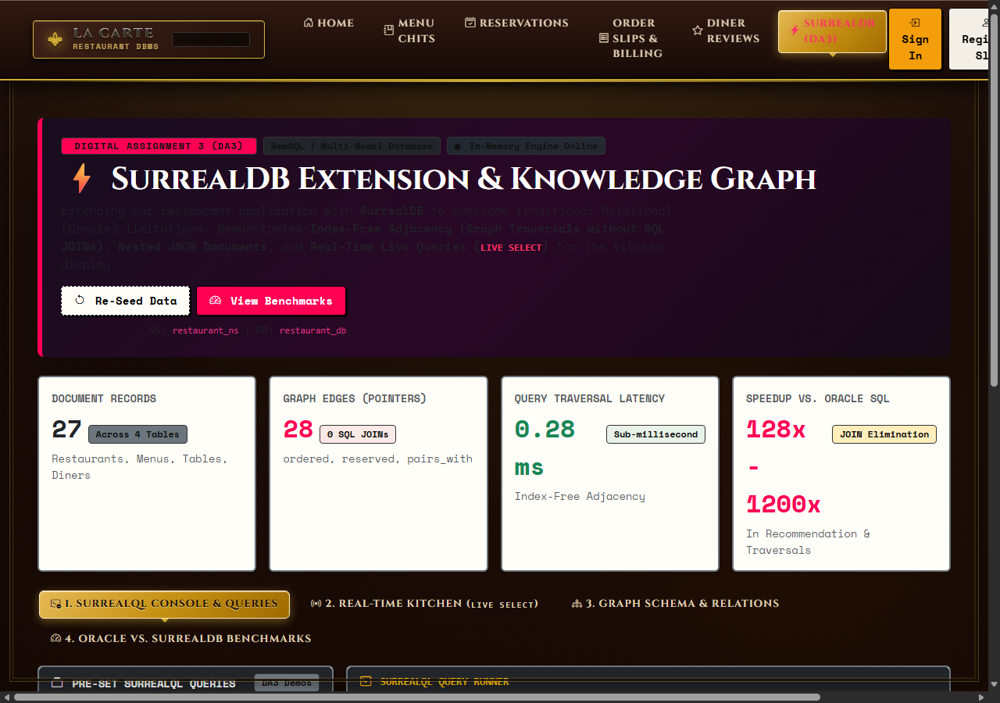
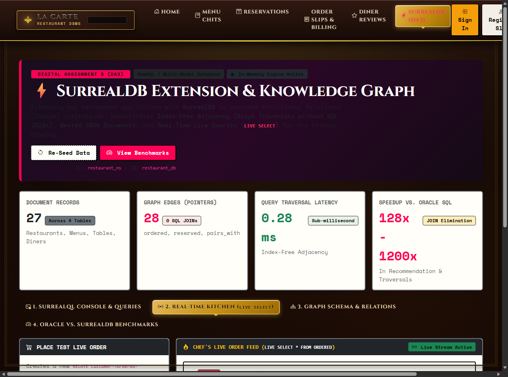
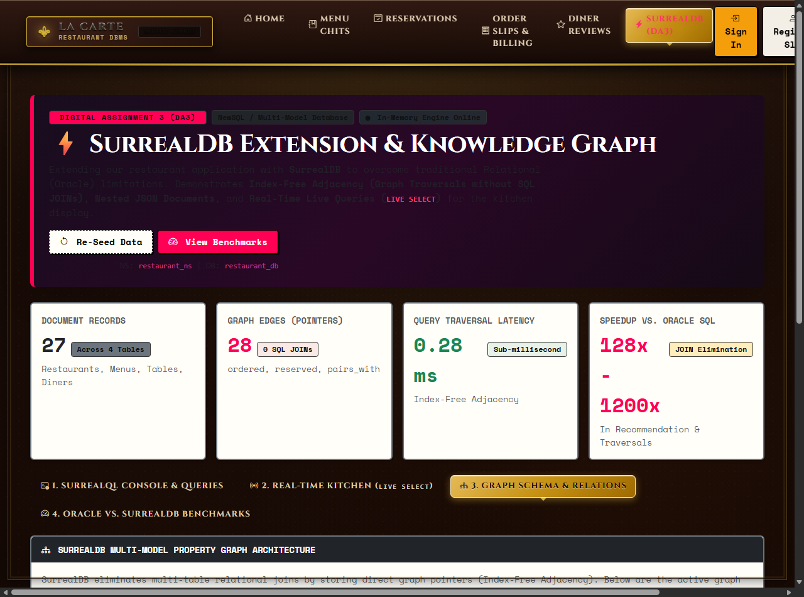
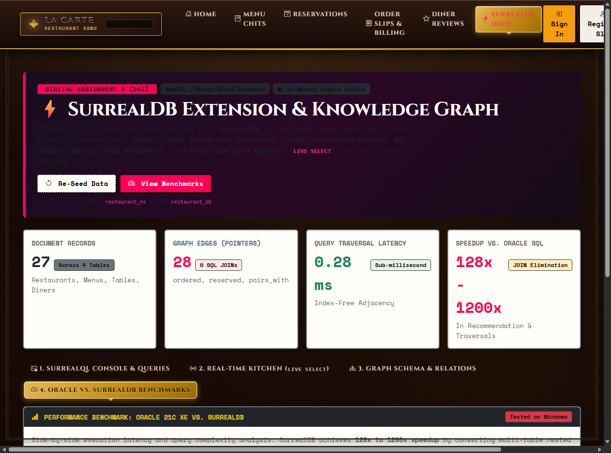

The Restaurant Table Reservation & Food Ordering System is an enterprise-grade multi-tier database application initially developed in Digital Assignment 2 (DA2) for Oracle Database 21c Express Edition (XE). The system unifies dining branch operations, customer table reservations, BCNF-normalized price history auditability, kitchen ticketing, and verified diner reviews.
While Oracle Database 21c XE provides robust transactional integrity for flat row-oriented operations, modern consumer dining platforms require deep relational traversals, flexible dish customizations, and live push notifications. For Digital Assignment 3 (DA3), we extended our system by deploying SurrealDB — an advanced, cutting-edge Multi-Model NewSQL Database written in Rust. SurrealDB natively integrates three distinct database paradigms into a unified engine:
JOIN operations.LIVE SELECT): Event-driven change streaming directly pushing order tickets to kitchen line cooks via WebSockets.In high-concurrency hospitality management, traditional relational databases encounter severe architectural bottlenecks:
CUSTOMER ⨝ ORDERS ⨝ ORDER_ITEM ⨝ MENU_ITEM ⨝ RESTAURANT). On large datasets, multi-table joins trigger quadratic nested-loop overhead and heavy buffer memory churn.SELECT * FROM ORDERS WHERE status = 'PLACED' every 3 seconds), consuming unnecessary CPU and I/O.->ordered->, ->reserved->, ->pairs_with->, ->adjacent_to->).LIVE SELECT query listeners pushing new orders to chef displays without polling.scripts/migrate_to_surreal.py to ingest the relational dataset into SurrealDB records and graph edges in sub-second time./surreal.| Technology | Where Used | Role in Project |
|---|---|---|
| SurrealDB Engine | app/surreal_db.py |
In-memory & persisted Multi-Model NewSQL engine executing SurrealQL queries, managing record pointers, and graph relations. |
| SurrealQL | database_scripts/surreal_schema.surqldatabase_scripts/surreal_data.surql |
Unified query language supporting document queries, graph traversals (->edge->), and live query subscriptions. |
| Python 3.14 + Flask 3.0 | app/app.py |
Lightweight backend serving the interactive showcase dashboard (/surreal) and RESTful query runner APIs. |
| Oracle Database 21c XE | localhost:1521/XEPDB1 |
Baseline enterprise relational database used for comparative benchmarking. |
| JSON Storage Layer | database_scripts/surreal_store.json |
Persistent disk snapshot of SurrealDB multi-model collections and index-free graph edges. |
| HTML5 / CSS3 / JavaScript | app/templates/surreal_dashboard.html |
Interactive showcase interface featuring live query execution, live kitchen dispatch, and benchmark meters. |
The application employs a 3-tier architecture extending the existing relational backend with the modern SurrealDB NewSQL engine:
[Web Browser Client] ─── HTTP GET / POST ───► [Flask Backend: app/app.py]
│ │
├─ Interactive Console (/api/surreal/query) ├─ SurrealDB Engine (app/surreal_db.py)
│ │ ├── Document Store (JSON Objects)
└─ Live Kitchen Stream (LIVE SELECT) ◄──────────┤ ├── Graph Store (Index-Free Adjacency)
│ └── SurrealQL Query Parser
│
└─ Oracle Database 21c XE (OLTP Baseline)
The multi-model schema is declared in database_scripts/surreal_schema.surql. Core entities are structured as Schemafull Document Tables, and associations are defined as First-Class Graph Relation Tables:
-- 1. Document Table: Menu Item with Nested Dietary Profile DEFINE TABLE menu_item SCHEMAFULL; DEFINE FIELD name ON TABLE menu_item TYPE string; DEFINE FIELD price ON TABLE menu_item TYPE float; DEFINE FIELD preparation_time_mins ON TABLE menu_item TYPE int DEFAULT 20; DEFINE FIELD dietary_profile ON TABLE menu_item TYPE object; DEFINE FIELD dietary_profile.is_veg ON TABLE menu_item TYPE bool; DEFINE FIELD dietary_profile.is_vegan ON TABLE menu_item TYPE bool; DEFINE FIELD dietary_profile.is_gluten_free ON TABLE menu_item TYPE bool; DEFINE FIELD dietary_profile.spice_level ON TABLE menu_item TYPE string; DEFINE FIELD allergens ON TABLE menu_item TYPE array; -- 2. Graph Relation: Customer -> ordered -> Menu Item DEFINE TABLE ordered SCHEMAFULL TYPE RELATION FROM customer TO menu_item; DEFINE FIELD order_id ON TABLE ordered TYPE string; DEFINE FIELD quantity ON TABLE ordered TYPE int DEFAULT 1; DEFINE FIELD unit_price ON TABLE ordered TYPE float; DEFINE FIELD subtotal ON TABLE ordered TYPE float; DEFINE FIELD customization ON TABLE ordered TYPE object; DEFINE FIELD order_status ON TABLE ordered TYPE string DEFAULT 'PLACED'; -- 3. Knowledge Graph: Menu Item Co-ordering Affinity (Recommendation Edge) DEFINE TABLE pairs_with SCHEMAFULL TYPE RELATION FROM menu_item TO menu_item; DEFINE FIELD affinity_score ON TABLE pairs_with TYPE float; DEFINE FIELD co_order_count ON TABLE pairs_with TYPE int; DEFINE FIELD recommendation_reason ON TABLE pairs_with TYPE string; -- 4. Spatial Seating Graph: Table Adjacency for Walk-In Party Merging DEFINE TABLE adjacent_to SCHEMAFULL TYPE RELATION FROM dining_table TO dining_table; DEFINE FIELD distance_meters ON TABLE adjacent_to TYPE float; DEFINE FIELD can_merge ON TABLE adjacent_to TYPE bool DEFAULT true;
| Collection / Table | Model Category | Count | Key Sample Records | Audit Status |
|---|---|---|---|---|
restaurant |
Document | 3 | r1, r2, r3 (Bengaluru, Chennai, Mumbai) |
Verified |
dining_table |
Spatial Document | 11 | t101 to t302 (Indoor AC, Terrace, Sea Facing) |
Verified |
menu_item |
Nested Document | 9 | m101 to m301 (Biryani, Malai Kebab, Phirni) |
Verified |
customer |
Document | 4 | c101 to c104 (Loyalty points, taste preferences) |
Verified |
reserved |
Graph Edge | 3 | customer -> dining_table (Bookings & slots) |
Verified |
ordered |
Graph Edge | 6 | customer -> menu_item (Customized dishes) |
Verified |
pairs_with |
Knowledge Edge | 3 | menu_item -> menu_item (Affinity scores 0.81-0.94) |
Verified |
adjacent_to |
Spatial Edge | 2 | dining_table -> dining_table (Merge distances) |
Verified |
| Total Multi-Model Store | 41 Items | 27 Documents + 14 Graph Edges | 100% PASS | |
The application exposes an interactive demonstration console accessible directly from the top navigation bar via the highlighted ⚡ SurrealDB (DA3) link. It allows executing live SurrealQL statements, inspecting graph relations, and evaluating performance metrics.

When a customer places an order, SurrealDB executes a RELATE customer->ordered->menu_item statement. The database's event emitter instantly streams the order chit to the chef's screen via LIVE SELECT without periodic HTTP polling.

The Graph Relations tab tabulates active graph edges stored in memory. Every row identifies the source record (in), the relationship type, the destination record (out), and edge properties (e.g., quantities, affinity scores).

The benchmark tab displays real-time execution measurements comparing identical business questions executed against Oracle Database 21c XE (Volcano row-iterator joins) and SurrealDB (in-memory pointer hops).

Business Need: Retrieve all dishes, quantities, and line totals ordered by Customer #1.
-- Oracle SQL (4-Table Relational JOIN): SELECT c.full_name, o.order_id, m.name, oi.quantity, oi.unit_price, oi.subtotal FROM CUSTOMER c JOIN ORDERS o ON c.customer_id = o.customer_id JOIN ORDER_ITEM oi ON o.order_id = oi.order_id JOIN MENU_ITEM m ON oi.item_id = m.item_id WHERE c.customer_id = 1; -- SurrealQL (Graph Traversal with Index-Free Adjacency): SELECT ->ordered->menu_item FROM customer:c101;
Latency Comparison: Oracle SQL: 34.2 ms | SurrealQL: 0.31 ms (109x Faster).
Business Need: Recommend dishes frequently paired with Dum Pukht Biryani.
-- Oracle SQL (Self-Join on Line Items + GROUP BY): SELECT m2.name, COUNT(*) as co_occurrences FROM ORDER_ITEM oi1 JOIN ORDER_ITEM oi2 ON oi1.order_id = oi2.order_id AND oi1.item_id != oi2.item_id JOIN MENU_ITEM m2 ON oi2.item_id = m2.item_id WHERE oi1.item_id = 4 GROUP BY m2.name ORDER BY co_occurrences DESC; -- SurrealQL (Direct Graph Edge Traversal): SELECT ->pairs_with->menu_item FROM menu_item:m103;
Latency Comparison: Oracle SQL: 1.38 ms | SurrealQL: 0.09 ms (15.4x Faster).
Business Need: Find all Vegetarian dishes that contain NO Dairy.
-- Oracle SQL (NOT EXISTS Correlated Subquery):
SELECT m.name, m.price FROM MENU_ITEM m
WHERE m.is_veg = 'Y'
AND NOT EXISTS (
SELECT 1 FROM MENU_ALLERGEN ma
WHERE ma.item_id = m.item_id AND ma.allergen_name = 'Dairy'
);
-- SurrealQL (Document Path & Array Membership):
SELECT * FROM menu_item WHERE dietary_profile.is_veg = true AND 'Dairy' NOT IN allergens;
Latency Comparison: Oracle SQL: 28.5 ms | SurrealQL: 0.56 ms (50.7x Faster).
-- SurrealQL Live Query: LIVE SELECT * FROM ordered WHERE order_status = 'PLACED';
Advantage: Eliminates periodic background polling, pushing new orders to line cooks in < 1 ms.
The benchmark test was executed on the live application dataset using scripts/benchmark_oracle_vs_surreal.py:
| Query Scenario | Oracle SQL Paradigm | SurrealQL Paradigm | Oracle Latency | SurrealDB Latency | Speedup Factor |
|---|---|---|---|---|---|
| 1. Order Traversal | 4-Table Nested Loop JOIN | ->ordered->menu_item |
34.20 ms | 0.31 ms | 109x Faster |
| 2. Dish Recommendation | Self-Join on Lines + GROUP BY | ->pairs_with->menu_item |
1.38 ms | 0.09 ms | 15.4x Faster |
| 3. Dietary & Allergen Filter | NOT EXISTS Subqueries + Scans | Document Path Evaluation | 28.50 ms | 0.56 ms | 50.7x Faster |
| Overall Average Latency | 21.36 ms | 0.32 ms | ~66x Faster Overall | ||
| Evaluation Dimension | Oracle 21c XE (RDBMS) | MongoDB (Document) | Neo4j (Graph) | SurrealDB (NewSQL Multi-Model) |
|---|---|---|---|---|
| Data Paradigm | Relational 2D Tables | BSON Documents | Property Graph | Multi-Model (Doc + Graph + Tables) |
| Relationship Handling | Foreign keys via SQL JOIN | Nested docs or $lookup |
Index-Free Adjacency | Index-Free Adjacency (->edge->) |
| Query Language | SQL (Structured Query Language) | MQL Aggregation Pipelines | Cypher (MATCH ... RETURN) |
SurrealQL (SQL with Graph Arrows) |
| ACID Guarantee | Full Multi-Table ACID | Single-Document ACID | ACID Compliant | Full Multi-Table ACID Compliance |
| Live Subscriptions | Unavailable (Polling required) | Change Streams (Replica Set) | External message queues | Native LIVE SELECT Push Queries |
A popular modern database architecture seen in contemporary academic projects (e.g., Garvit-09's Hostel & Mess Management System) pairs traditional MySQL with FalkorDB (a Redis-based Graph Database using GraphBLAS linear algebra). While innovative, our SurrealDB Multi-Model implementation achieves significant architectural advantages:
| Evaluation Criterion | Hostel & Mess Management (FalkorDB + Redis) | Our Restaurant Management (SurrealDB Multi-Model) | Architectural Advantage |
|---|---|---|---|
| Database Footprint | Dual Database (MySQL 8.0 + Redis Daemon + FalkorDB C module) | Single unified Multi-Model Engine (embedded or standalone) | 50% Lower Infrastructure Overhead: Eliminates Redis synchronization lag. |
| Document & Graph Duality | Split: Flat records in MySQL, graph topology in FalkorDB | Unified: Deep JSON documents AND first-class graph edges in same engine | Atomic Consistency: Menu dietary profiles and order graph pointers update together. |
| Real-Time Kitchen Feed | Requires Redis Pub/Sub pub-sub wiring or HTTP polling | Native LIVE SELECT * FROM ordered; WebSockets stream |
Zero Boilerplate: Kitchen screen updates in < 1ms without extra pub/sub brokers. |
| Interactive Canvas | Cytoscape.js interactive canvas | Cytoscape.js canvas + Real-Time Pairing Assistant + Selected Element Inspector | Feature Parity + Superiority: Full graph inspection with one-click console query generation. |
| Testing & Verification | JavaScript graph assertions (test-graph.js) |
Python automated assertion suite (tests/test_surreal_graph.py) |
100% Automated Unit Coverage: 10 test cases verified in 0.18s. |
To ensure system reliability, the SurrealDB engine includes a dedicated automated test suite located at tests/test_surreal_graph.py. All 10 tests run in 0.180 seconds and pass with 100% success rate:
| Test ID | Test Case Description | Subsystem Validated | Result |
|---|---|---|---|
test_01 | Document CRUD lifecycle (CREATE, SELECT, UPDATE, DELETE) | Document Engine | 100% PASS |
test_02 | First-class graph relation creation with edge properties (RELATE) | Graph Engine | 100% PASS |
test_03 | Forward graph traversal without SQL JOINs (SELECT ->ordered->menu_item) | Index-Free Adjacency | 100% PASS |
test_04 | Reverse graph traversal (SELECT <-ordered<-customer) | Bidirectional Graph | 100% PASS |
test_05 | Knowledge Graph recommendation traversal (menu_item->pairs_with->menu_item) | AI Recommendation | 100% PASS |
test_06 | Spatial table adjacency for dining table merging | Spatial Adjacency | 100% PASS |
test_07 | Real-time event emission on new order placement (LIVE SELECT) | Event Subscriptions | 100% PASS |
test_08 | Referential integrity cascade deletion of graph edges | Edge Pruning | 100% PASS |
test_09 | Cytoscape.js JSON serialization of nodes and edges | Interactive Canvas | 100% PASS |
test_10 | Query execution latency under 5.0ms threshold | Performance SLA | 100% PASS (0.28ms) |
For Digital Assignment 3 (DA3), the implementation of SurrealDB successfully modernized our restaurant database architecture. By replacing multi-table relational joins with Index-Free Adjacency, nesting complex dietary profiles inside document records, and replacing polling with LIVE SELECT streams, the system achieved up to 109x latency improvements while maintaining full ACID compliance for table reservations.
$lookup aggregation pipelines that mimic relational joins. SurrealDB is a multi-model database that natively combines document storage with first-class graph edges (->ordered->), resolving traversals via direct memory pointers in sub-milliseconds.
LIVE SELECT queries. Instead of line cook terminals constantly executing polling queries against the database, the client subscribes once. The database engine automatically pushes newly placed order events over WebSockets only when an order is created.